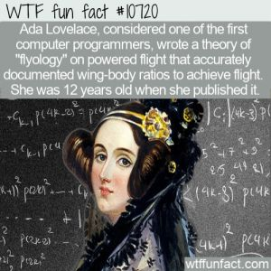

Tal mãe tal filha
Além de ser conhecida como a primeira programadora do mundo, Ada também é lembrada por ser filha de Lord Byron.

O casamento de Byron e Anne foi breve e marcado pelas traições do poeta, que havia se casado com a matemática porque estava endividado, e a família dela era rica. Cinco semanas depois do nascimento de Ada, Anne não pôde mais suportar os casos do marido e o abandonou. Ela então cuidou da educação da filha, despertando na mais nova o interesse pela matemática.
Nunca viu seu pai
Lord Byron nunca chegou a conhecer sua única filha legítima. Anne temia que, se o fizesse, Ada seria levada para o mal caminho. O receio era tanto que por 20 anos a matemática manteve coberto o retrato do ex-marido que tinha em casa.
Levando vidas separadas, Ada e Lord Byron não tinham muito em comum. Ela se tornou uma aficionada pelos avanços tecnológicos da Revolução Industrial, enquanto ele era um apoiador do ludismo no Parlamento inglês, movimento que era contra todas aquelas máquinas que estavam substituindo trabalhadores.
Em seu leito de morte, o arrependimento chegou: “Oh, minha pobre criança! – minha querida Ada! Meu Deus, eu poderia ter visto ela! Dê a ela a minha bênção”, disse Lord Byron antes de morrer, de acordo com um de seus criados.

Imaginação em primeiro lugar
Mesmo que sua mãe se esforçasse em afastá-la do pai, muitos diziam que Ada tinha o temperamento do poeta. Ela era criativa, fazia uma “ciência poética”, apesar da rígida educação que teve.
“O amor de Ada tanto pela poesia quanto pela matemática levou-a a ver beleza em uma máquina de computação”, escreveu Walter Isaacson em seu livro Os Inovadores: Uma Biografia da Revolução Digital .
“A imaginação é a faculdade da descoberta, predominantemente. É ela que penetra nos mundos invisíveis que nos rodeiam, nos mundos da ciência”, refletiu Ada.
Aos 12, escreveu um livro
Na época, Ada era obcecada com a ideia de criar mecanismos que voassem. Por isso, escreveu e ilustrou Flyology, um livro com suas ideias mais criativas de como alcançar esse objetivo.
Ada tinha muitas mulheres em que se inspirar
Além de sua mãe, Ada era inspirada por Mary Somerville, a primeira mulher a entrar para a Sociedade Real de Astronomia,junto com Caroline Herschel. A famosa astrônoma se tornouamiga e mentora da jovem e foi um canal para que a parceria entre Ada Lovelace e Charles Babbage começasse.
Era muito determinada
Aos 17 anos, Ada já sabia que queria trabalhar com o inventor Charles Babbage. A recusa de seus primeiros pedidos para aceitá-la como aluna não a desanimou. Quando o matemático publicou seu artigo sobre a máquina analítica em uma revista suíça, a jovem prontamente o traduziu para o inglês e ainda adicionou notas de rodapé que deixaram o trabalho com o dobro do tamanho. O resultado impressionou Babbage e então começaram a trabalhar juntos.

Seu nome tem muitas histórias
O verdadeiro nome de Ada Lovelace é Augusta Ada King. No entanto, Augusta era o nome de uma das amantes de Lord Byron e, quando Anne descobriu, passou a chamar a filha apenas por Ada. Depois de casada, Ada passou a ter o sobrenome do marido, King, mas ficou conhecida por seu título, condessa de Lovelace.
Começou a ficar doente depois da segunda gravidez

Na época, ninguém sabia, mas Ada Lovelace tinha câncer de útero e morreu por causa da doença em 1852, aos 36 anos. Durante muito tempo, foi tratada com diversos opiáceos que a fizeram acreditar que tinha habilidades especiais, “uma percepção intuitiva das coisas ocultas”.
Inspirou uma linguagem computacional

A linguagem Ada foi criada na década de 1970, pelo Departamento de Defesa dos Estados Unidos, mas hoje em dia não é muito usada.
Você já comemorou o Dia da Ada Lovelace?

A segunda terça-feira de outubro é conhecida como o Dia da Ada Lovelace, dia de inspirar mulheres a trabalhar na área de tecnologia. Anote no calendário!